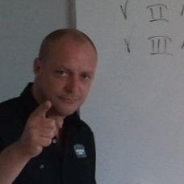

IN MEMORY OF

WHITE LABEL
RICHARD WITTEBOL
17-09-1975 · FOREVER 39
CREW.............. DA LAMA / JUICE
TRACKS............ 20
STATUS............ STILL ONLINE
Richard Wittebol was White Label: part of JUICE and of DA LAMA, and with twenty tracks the one who made the most music in this whole collection — from “ol’fashion hardcore” to monotone trance.
He signed his work in his own way — WhîTε £ab≡£ — and filled the sample names with jokes, shout-outs and messages to the crew. Those messages are still in the files. And so is he: every track below plays exactly the way he left it.
[ IN HIS OWN WORDS ]
“Check me CYBA_SPOT: SpYcO’s BBS” — Cerebral Cortex, 1995
“No Fuzzzz... Just ol’fashion HardCore” — Quick, Fast and in a Hurry, 1995
“Aah mY ReSpeCTz aRE ViBiNG out to all me Da LaMa Compagnion LamaZz” — Monotoned Chaos, 1995
“You don’t always know who’s right, but you always know who is in ‘Charge’.” — Glowing Whispers, 1996
“Me am outha here...” — Cerebral Cortex, 1995
[ THE TRACKS OF WHITE LABEL ]
Press PLAY to listen right here, INFO for the
texts the makers hid in the sample names, or DL to download the original file.
WhîTε £ab≡£ ... still here.